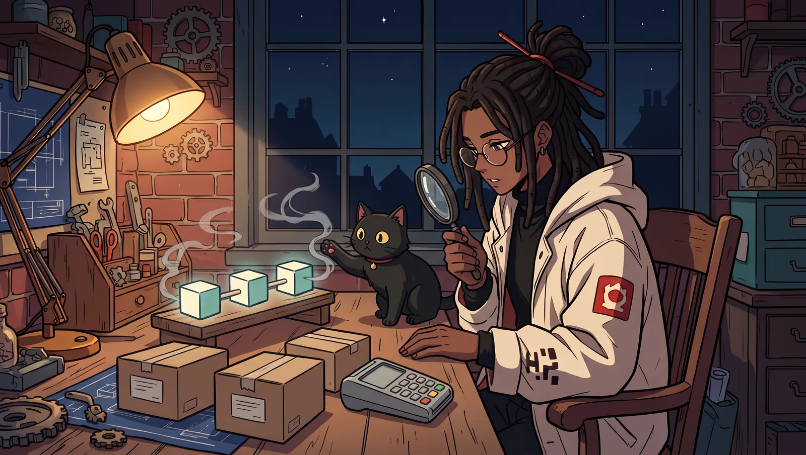
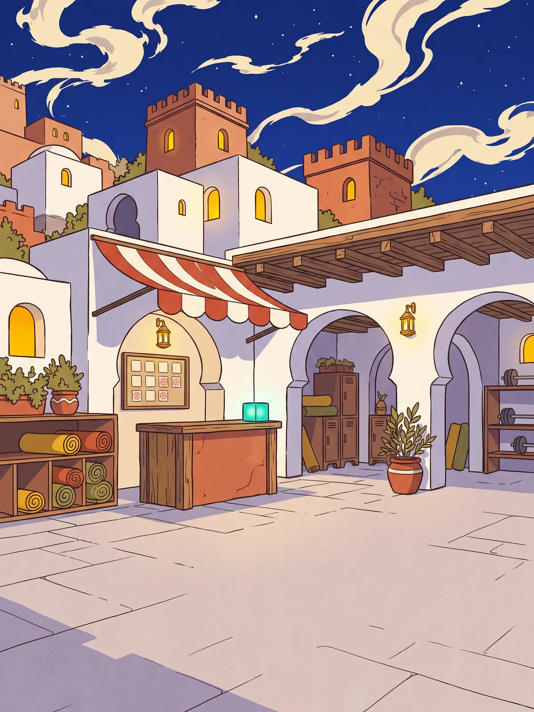
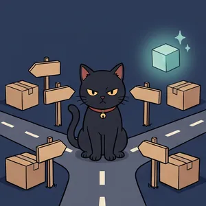
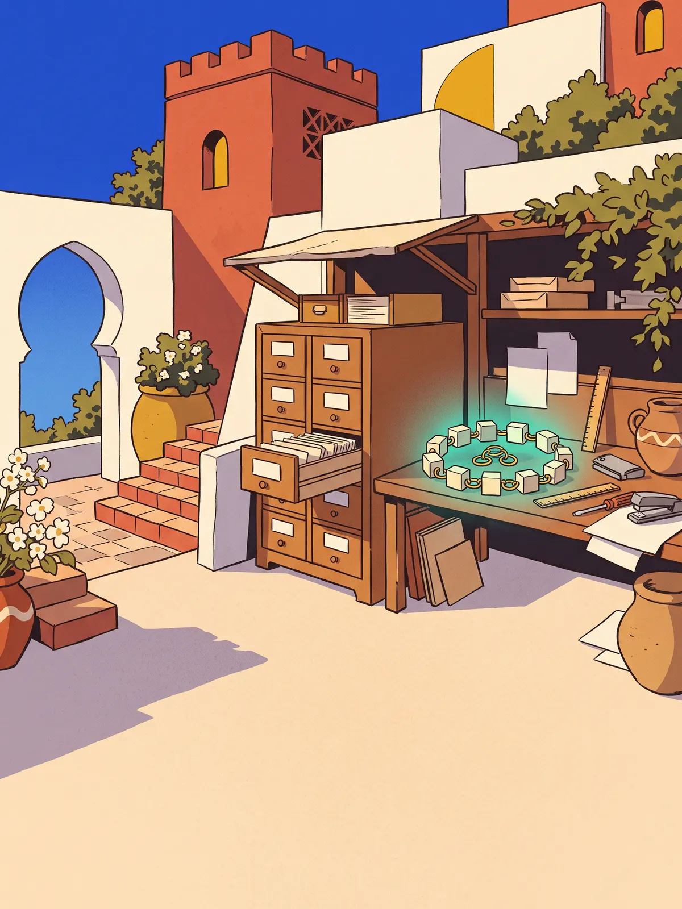
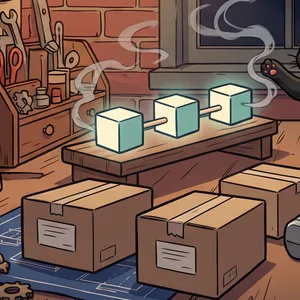
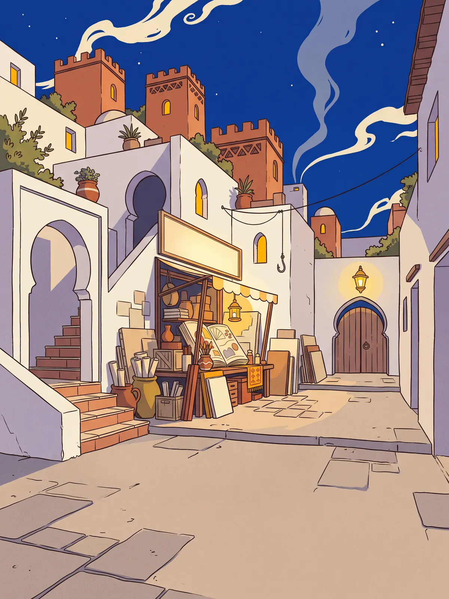
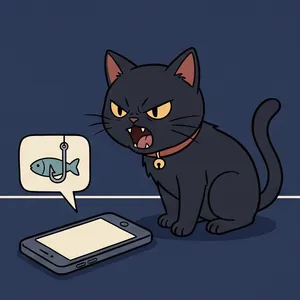

/ COURS CLIENT · LE WEB3, CÔTÉ CLIENT
Le web3, sans fumée.
On vous a vendu une chaîne ; vous vouliez peut-être juste des clients fidèles. Huit étapes pour trier l’outil du résultat, et repartir avec une fiche qu’on peut chiffrer. Parfois une chaîne est le bon outil ; ce cours aide à savoir quand. C’est de l’éducation : aucun conseil en placement, aucun signal, aucune promesse de gain.
Chez la salle de Samia · exemple inventé
Ouvrir l’atlasCes leçons sont de l’éducation, pas un conseil financier ni un conseil en placement. Aucun signal de trading, aucune gestion de fonds, aucune promesse de gain.
Les règles changent d’un pays à l’autre. En Algérie, la loi 25-10 de juillet 2025 interdit l’achat, la vente, la détention et la promotion des crypto-actifs : vérifiez toujours la loi là où vous vivez.

Choisir un quartier
Les quartiers
0 quartier fait sur 8
Chez la salle de Samia · exemple inventé ·
Les mots



Le dossier · Acte I · 1 / 8
Mots
Les mots · avec Raven
Samia tient une salle de sport pour femmes à Sétif : 800 adhérentes, un site déjà en ligne. Un fournisseur lui a proposé « un NFT pour tes membres ». Sa phrase, sans aucun de ces mots : « que mes adhérentes fidèles soient récompensées ». Ses adhérentes sont en Algérie : elle le coche ici.
La règle
Signer, c’est donner son accord : on ne signe pas ce qu’on ne comprend pas.

L’exercice de terrain
Lire chaque explication
Ouvrez chaque explication une fois. L’exercice est fait quand vous les avez toutes lues.
Les mots
On vous a parlé de jetons, de NFT, de portefeuilles : avant les mots, votre idée. Écrivez-la en une phrase, sans aucun d’eux, puis ouvrez-les un par un. Le web3, c’est un site qui parle à un registre partagé au lieu d’une base de données privée.
Et d’abord : où sont vos utilisateurs, ou votre entreprise ?
Les règles changent d’un pays à l’autre. En Algérie, la loi 25-10 de juillet 2025 interdit l’achat, la vente, la détention et la promotion des crypto-actifs : vérifiez toujours la loi là où vous vivez.
La loi décide avant le design : l’étape 7 vous dit quoi demander à un avocat.
Quatre mots de plus
BlockchainUn registre copié sur de nombreuses machines, où l’on ajoute des lignes sans réécrire l’historique. Le NIST, l’agence américaine des normes, le décrit ainsi.
PortefeuilleUne application ou un appareil qui garde vos clés. Il ne contient pas les jetons : ils restent sur le réseau (ethereum.org, site de documentation communautaire).
Jeton et NFTUne ligne du registre qui dit qui possède quoi : une unité interchangeable, ou un objet unique. Ce qu’obtient le détenteur d’un NFT dépend de ce que son créateur a prévu (ethereum.org).
Connecter son portefeuilleLe site lit votre adresse publique ; il ne peut rien déplacer sans votre signature. Mais une signature peut être une autorisation de dépense : selon ethereum.org, elle n’expire pas, se déconnecter ne l’annule pas, il faut la révoquer. Se connecter, signer un message et signer une transaction sont trois demandes différentes : l’étape 4 les sépare.
Clé et phrase de récupérationLa clé privée signe ; la phrase la recrée. Le NIST l’écrit : perdre la clé, c’est perdre l’actif. Les autorités européennes : ne la partagez jamais, qui l’a prend le contrôle.
Smart contractUn programme publié dans le registre. Il s’exécute comme il est programmé quand une transaction l’appelle, et son code déployé est public dans le registre. Selon ethereum.org, une fois déployé, il ne se corrige en général pas.
StablecoinUn jeton conçu pour suivre une monnaie. Les autorités européennes préviennent qu’il peut ne pas rester si stable, surtout quand les marchés sont sous tension.
Frais de réseauChaque action paie le réseau, et le montant varie avec la demande. Selon ethereum.org, le frais est payé que l’opération réussisse ou échoue.
Le portefeuille, la phrase de récupération et les envois irréversibles sont aussi dans la leçon Crypto 101 du manuel de l’argent. Ouvrir Crypto 101
Les mots · Ne pas signer tant que je ne sais pas ce que ça autorise.


Le dossier · Acte I · 2 / 8
Chaîne ?
Faut-il une chaîne ? · avec Raven
Samia répond aux six questions. À la deuxième, « Plusieurs organisations doivent-elles y écrire ? », elle répond non : seule sa salle écrit. Le verdict tombe : pas besoin de blockchain, une base de données.
La règle
Si un seul écrit dans le registre, une base de données suffit.

Faire l’exercice de terrainL’exercice de terrain
L’arbre des six questions
Répondez par oui ou non jusqu’au verdict de l’arbre, ou prenez la branche « être payé ». L’exercice est fait au verdict.
Faut-il une chaîne ?
On demande souvent une technique alors qu’on veut un résultat.
On vous a dit « mets-le sur la blockchain » : six questions suffisent pour savoir si c’est vrai. Le NIST, l’agence américaine des normes, reprend dans son guide de 2018 un arbre du département américain de la Sécurité intérieure : à chaque « non », l’arbre propose un outil ordinaire. Sa conclusion : à utiliser « seulement dans les situations appropriées ».

D’abord : vous voulez construire quelque chose sur une chaîne (registre, jeton, NFT, DAO), ou être payé (carte, virement ou crypto) ?
Un paiement, pas une chaîne.
L’arbre ne s’applique pas à votre cas : l’étape 3 s’ouvre sur « Accepter la crypto ».
Les sources du cours [2]
Faut-il une chaîne ? · Un seul qui écrit : une base de données.


Le dossier · Acte II · 3 / 8
Besoin
Ce que vous voulez vraiment · avec Techno Pigeon
On lui a proposé « Un NFT pour mes membres ». Ce qu’elle veut : récompenser la fidélité. Ses adhérentes n’ont pas à revendre leur carte, et elle a déjà un site : la route ordinaire est d’y ajouter des points et un espace membres, à chiffrer au cadrage.
La règle
On part du résultat voulu, puis on prend la route la plus simple qui y mène.

L’exercice de terrain
Remplir sa case de la fiche
Répondez pour vous : chaque réponse remplit sa case de la fiche, sur cet appareil seulement. Une réponse suffit pour faire l’exercice ; rien n’est obligatoire.
Ce que vous voulez vraiment
On vous a proposé un NFT, un jeton, une DAO : derrière chaque demande, il y a un résultat qu’on veut vraiment. Choisissez la vôtre : voici ce qu’on veut d’habitude, et la route ordinaire. Ce tableau est notre avis d’atelier ; les faits de loi ont leur source.
Choisissez la demande qui ressemble à la vôtre : sa route ordinaire s’affiche, et la fiche la note.
Vous avez déjà un site ?
- Ce qu’on veut d’habitude
Un accès réservé, un badge, une carte de membre.
- La route ordinaire (notre avis)
- Des comptes et un espace membres sur un site, une carte imprimable avec un code.
- Ce que disent les textes
- Dans l’UE, les autorités européennes indiquent qu’un NFT unique est hors du champ de MiCA, mais qu’une série ou une collection peut y entrer.
- Ce qu’une chaîne ajoute
- Selon ethereum.org, les NFT servent entre autres de billets et d’accès réservé, et seul leur détenteur peut les vendre ou les échanger. Ce qu’un jeton ajoute à une carte de membre, à notre avis : le membre la détient lui-même et peut la céder.
Vos membres doivent-ils pouvoir revendre ou transférer leur carte ?
Si vous allez quand même sur une chaîne
Si vous allez sur une chaîne, une proposition devrait lister (notre liste, d’après les sources citées) :
À prévoir, dans ma fiche
Ces lignes ne partent dans votre fiche que si vous gardez l’idée de chaîne, à la dernière étape.
Chez nous, la route la plus proche Application web · 6 écrans · 450 000 – 1 200 000 DA
- Ce qu’on veut d’habitude
Faire revenir les clients, récompenser la fidélité.
- La route ordinaire (notre avis)
- Un programme de points dans une base de données.
- Ce que disent les textes
- Dans l’UE, des points de fidélité non transférables sont hors du champ de MiCA, selon les autorités européennes.
Si vous allez quand même sur une chaîne
Si vous allez sur une chaîne, une proposition devrait lister (notre liste, d’après les sources citées) :
À prévoir, dans ma fiche
Ces lignes ne partent dans votre fiche que si vous gardez l’idée de chaîne, à la dernière étape.
Chez nous, la route la plus proche Application web · 6 écrans · 450 000 – 1 200 000 DA
- Ce qu’on veut d’habitude
Être payé par des clients à l’étranger.
Ou : vos acheteurs détiennent de la crypto et veulent payer avec.
- La route ordinaire (notre avis)
- Un paiement par carte ou par virement, pas en crypto.
- Ce que disent les textes
Les règles changent d’un pays à l’autre. En Algérie, la loi 25-10 de juillet 2025 interdit l’achat, la vente, la détention et la promotion des crypto-actifs : vérifiez toujours la loi là où vous vivez.
Le texte précise aussi : la loi interdit d’utiliser des actifs virtuels comme moyen de paiement. Et selon la FTC, l’autorité américaine des consommateurs, un paiement en crypto est en général définitif : pas de remboursement comme avec une carte.
À Dubaï : la question pour la VARA (l’autorité des actifs virtuels de Dubaï) et pour votre avocat est de savoir si vous, ou un prestataire agréé, pouvez recevoir ce paiement.
Depuis l’Algérie, les façons d’être payé de l’étranger sont dans la leçon « Se faire payer » du manuel.
Chez nous, la route la plus proche Ajouter un paiement à un site existant : à chiffrer au cadrage, pas de prix publié.
- Ce qu’on veut d’habitude
Prouver que personne n’a trafiqué les données.
- La route ordinaire (notre avis)
- Une base de données avec un journal d’accès et des exports signés.
- Ce que disent les textes
- Dans l’arbre repris par le NIST, s’il n’y a aucun problème de confiance sur qui tient les données, « une base de données classique devrait suffire » ; un besoin d’audit renvoie, lui, aux questions suivantes de l’arbre.
Chez nous, la route la plus proche Automatisation · 3 flux · 140 000 – 420 000 DA
- Ce qu’on veut d’habitude
Que les membres votent les décisions (l’idée d’une DAO : une organisation qui vote sur la chaîne).
- La route ordinaire (notre avis)
- Un espace membres avec des votes, des statuts écrits, une forme d’association.
- Ce que disent les textes
- Selon ethereum.org, « le Wyoming, le Vermont et les îles Vierges ont des lois sur les DAO, sous une forme ou une autre ». Ailleurs, ne supposez aucun statut juridique : demandez à un avocat.
Si vous allez quand même sur une chaîne
Si vous allez sur une chaîne, une proposition devrait lister (notre liste, d’après les sources citées) :
À prévoir, dans ma fiche
Ces lignes ne partent dans votre fiche que si vous gardez l’idée de chaîne, à la dernière étape.
Chez nous, la route la plus proche Application web · 6 écrans · 450 000 – 1 200 000 DA
- Ce qu’on veut d’habitude
À préciser ensemble.
- La route ordinaire (notre avis)
- Votre phrase de l’étape 1 et vos réponses de l’étape 2 suffisent pour commencer.
Chez nous, la route la plus proche Pas de prix publié : on en parle d’abord.
Nous ne construisons pas la partie chaîne (contrats, jetons, portefeuilles) ; nous construisons la solution ordinaire, et nous vous aidons à décider.
Les sources du cours [1] [2] [3] [4] [9] [12] [17] [18] [19]
Ce que vous voulez vraiment · Des points dans une base de données, pas un jeton.

Le dossier · Acte II · 4 / 8
Chaîne et base
Ce qui va sur la chaîne, et ce qui reste chez vous · avec Raven
Samia ne va pas sur une chaîne : pour elle, cette étape reste pliée. Elle en garde une règle : les noms et les courriels de ses adhérentes restent dans sa base.
La règle
Le hash dit « envoyé » ; seul le reçu dit si l’opération a réussi.

Lire avant de répondreL’exercice de terrain
Les six états d’une transaction
Passez d’un état à l’autre et lisez ce que chacun veut dire. L’exercice est fait quand les six ont été vus. Rien n’est écrit dans la fiche.
Ce qui va sur la chaîne, et ce qui reste chez vous
Sur une chaîne publique, tout ce qu’on écrit est visible de tous. Notre règle d’atelier : y mettre le minimum à vérifier, garder noms, courriels et listes dans votre base, et faire un site qui marche sans portefeuille. Suivez un exemple état par état, un reçu de présence (la preuve qu’une personne est venue à un cours) : une transaction envoyée reçoit d’abord un identifiant, puis son reçu dit « réussite » ou « échec », selon ethereum.org.
Votre route est ordinaire : cette partie reste pliée, et rien d’elle ne part dans votre fiche.
Si un jour vous allez quand même sur une chaîne : ce qui s’y écrit, état par état
Six états d’un reçu de présence
| Six états d’un reçu de présence | Dans votre base (privé) | Sur la chaîne (public) | Ce que voit le visiteur |
|---|---|---|---|
| Sans portefeuille | Le nom, le courriel, la réservation | Rien | « Votre place est réservée. » |
| Demande d’accord | La réservation | Rien encore : lire votre adresse n’est pas signer | « Votre portefeuille vous demande d’accepter. Lisez ce qu’il autorise. » |
| Envoyée | La réservation | Un identifiant de transaction (le hash), sans reçu | « Envoyé. En attente du résultat. » |
| Confirmée | La réservation | Un reçu au statut « réussite », et l’identifiant public du reçu : rien de personnel | « Reçu de présence vérifié. » |
| Échouée | La réservation | Un reçu au statut « échec » : rien n’a changé, mais les frais de réseau sont payés (ethereum.org) | « L’opération a échoué. Votre réservation reste valable. » |
| Nœud indisponible | La réservation | Pas de réponse du nœud (le serveur par lequel le site lit la chaîne) | « Vérification indisponible pour l’instant. Vous pouvez toujours réserver. » |
Trois demandes du portefeuille
- Se connecter
- Le site lit votre adresse publique : selon ethereum.org, c’est comme une connexion.
- Signer un message
- Ce n’est pas une transaction, mais certaines signatures valent autorisation de dépense : lisez avant d’accepter (étape 1).
- Signer une transaction
- Selon ethereum.org, une instruction signée qui change l’état du registre : envoyée au réseau, avec des frais.
Notre avis d’atelier Avant tout lancement, demandez une démonstration sur un réseau de développement, qu’ethereum.org décrit comme une chaîne locale faite pour tester une application. Avec des données inventées, jamais celles de vos clients : c’est notre règle.
Écrans que la proposition doit dessiner
Ce qui va sur la chaîne, et ce qui reste chez vous · Attendre le reçu, pas seulement le hash.


Le dossier · Acte II · 5 / 8
Coûts
Les coûts qu’on oublie · avec Ratman
Pour sa route ordinaire, Samia coche trois lignes : les données de ses adhérentes, les mises à jour, le support. Ni audit ni frais de réseau : il n’y a pas de contrat.
La règle
Une proposition complète montre aussi ce qui se paie après la mise en ligne.
Faire l’exercice de terrain
L’exercice de terrain
Remplir sa case de la fiche
Répondez pour vous : chaque réponse remplit sa case de la fiche, sur cet appareil seulement. Une réponse suffit pour faire l’exercice ; rien n’est obligatoire.
Les coûts qu’on oublie
Le devis parle du code, et oublie ce qui se paie après. Chaque carte est une ligne de budget qu’une proposition devrait montrer, même sans chiffre. Les cartes suivent votre route : ordinaire, paiement, ou chaîne.
La route ordinaire : les lignes qu’on oublie (notre liste)
- L’hébergement et le nom de domaine
- Qui les paie chaque année, et à quel nom sont-ils enregistrés ?
- Les comptes et les données
- Où sont gardés les noms et les courriels de vos membres, et qui y a accès ?
- Les mises à jour
- Qui corrige et met à jour après la mise en ligne, et pendant combien de temps ?
- Les contenus
- Qui écrit les textes et fournit les photos avant le lancement ?
- Le support
- Qui répond aux membres qui n’arrivent pas à se connecter ?
Ma fiche prévoit ces lignes
Si vous allez quand même sur une chaîne : six lignes de plus
Nous ne publions aucun prix de smart contract ni d’audit, et nous n’avons trouvé aucun prix officiel d’audit.
- L’audit
- Une relecture de sécurité du smart contract (le programme publié dans le registre) par des spécialistes. Selon ethereum.org, c’est une couche de protection qui ne trouvera pas tous les bugs, et un contrat déployé ne se corrige en général pas.
- Les frais de réseau
- Chaque action de vos utilisateurs paie le réseau, que l’opération réussisse ou échoue, et le montant varie avec la demande (ethereum.org).
- Les clés d’administration
- Qui peut modifier ou arrêter le contrat ? Selon ethereum.org, un seul détenteur est un point de défaillance unique ; plusieurs signataires réduisent le risque. Et une clé perdue, c’est l’actif perdu (NIST).
- L’après-lancement
- Surveillance, plan d’incident, arrêt d’urgence décidé d’avance : ethereum.org les range parmi les bonnes pratiques. Cela se prévoit et se paie après la mise en ligne.
- Le juridique
- Un avis d’avocat dans chaque pays où vivent vos utilisateurs. L’étape 7 montre pourquoi.
- Le support aux utilisateurs
- Notre avis d’atelier : des gens qui découvrent les portefeuilles posent des questions, et de fausses pages imitent les vraies (le FBI en a décrit en 2023). Il faut quelqu’un pour répondre et prévenir.
Ma fiche prévoit ces lignes
Ces lignes ne partent dans votre fiche que si vous gardez l’idée de chaîne, à la dernière étape.
Pour un paiement par carte ou par virement, il n’y a ni chaîne ni jeton. Ces six questions fixent le travail : c’est notre liste, et vos réponses partent dans la fiche.
En quelle monnaie vos clients paient-ils ?
Acompte ou paiement complet ?
Votre règle de remboursement et d’annulation
Où le client paie-t-il ?
Le prix : celui d’un site avec paiement si vous n’en avez pas encore ; au cadrage, sans prix publié, pour un site existant (étape 3).
Les règles changent d’un pays à l’autre. En Algérie, la loi 25-10 de juillet 2025 interdit l’achat, la vente, la détention et la promotion des crypto-actifs : vérifiez toujours la loi là où vous vivez.
Vous gardez l’idée d’être payé en crypto : voici les lignes à prévoir.
Pour recevoir un paiement en crypto, il n’y a ni contrat ni jeton à construire : les lignes à prévoir sont celles-ci, posées en questions.
- Qui encaisse
- Vous, ou un prestataire agréé ? Et qui convertit en monnaie ? C’est la question à poser au régulateur et à votre avocat (étape 7).
- Si le cours baisse
- Entre l’offre et l’encaissement, si la valeur baisse, qui perd ? À écrire avant le premier paiement.
- Le remboursement
- Selon la FTC, un paiement en crypto est en général définitif : comment rembourserez-vous un client ?
- La comptabilité
- Comment l’enregistrer ? Question pour votre comptable, avant le premier paiement.
Ma fiche prévoit ces lignes
Les coûts qu’on oublie · Demander les lignes d’après la mise en ligne, même sans chiffre.


Le dossier · Acte III · 6 / 8
Arnaques
Les arnaques · avec Kūro
Le même fournisseur revient par message privé : « Mint surprise ce soir, connectez votre portefeuille ici. » Samia reconnaît l’urgence et le lien qui ressemble au vrai : elle ne clique pas.
La règle
Une transaction faite ne se rappelle pas : l’urgence et le lien qui imite le vrai sont des signaux.

Faire l’exercice de terrainL’exercice de terrain
Trier les lignes
Placez chaque ligne dans une case : la raison de l’atelier s’affiche sous chacune. L’exercice est fait quand toutes sont placées.
Les arnaques
Un message pressant, un lien qui ressemble au vrai : vous, ou vos utilisateurs, pouvez être visés. Les autorités décrivent les mêmes signes : profit garanti, urgence, demande de phrase de récupération, paiement en crypto seulement, lien qui ressemble au vrai. Triez ces six messages.
-
« Support officiel : pour débloquer votre compte, envoyez votre phrase de récupération. »
-
« Mint (création de jetons) surprise ce soir seulement ! Connectez votre portefeuille ici. » Le lien ressemble au vrai.
-
« Rendement garanti de 3 % par jour. »
-
« Pour réserver le bien, payez l’acompte en crypto à cette adresse. »
-
« Nous avons retrouvé vos fonds perdus. Payez les frais de récupération. »
-
« Rappel : nous ne vous demanderons jamais votre phrase de récupération. »
Pour mes utilisateurs
Les arnaques · Ne pas cliquer : une transaction faite ne revient pas.
Le dossier · Acte III · 7 / 8
Loi
La loi, là où sont vos utilisateurs · avec Raven
Samia a coché « en Algérie » dès l’étape 1 : la carte Algérie s’affiche ici. Sa route ordinaire, des points dans une base, ne passe par aucun actif virtuel ; pour toute autre idée, la question à poser à un avocat est écrite sur la carte.
La règle
La loi qui compte est celle des pays où sont vos utilisateurs : à Dubaï, la VARA.
Faire l’exercice de terrain
L’exercice de terrain
La carte des lois
Choisissez où sont vos utilisateurs : la carte de chaque pays s’ouvre. L’exercice est fait dès qu’une carte est ouverte.
La loi, là où sont vos utilisateurs
Un projet peut être interdit avant d’être dessiné : la loi décide avant le design. Cochez où sont vos utilisateurs, ou votre entreprise : chaque carte dit ce que dit un texte officiel, et à qui poser la question. Rien ici n’est un conseil juridique.
Mes utilisateurs, ou mon entreprise, sont…
en Algérie
Les règles changent d’un pays à l’autre. En Algérie, la loi 25-10 de juillet 2025 interdit l’achat, la vente, la détention et la promotion des crypto-actifs : vérifiez toujours la loi là où vous vivez.
Le texte précise aussi : la loi n° 25-10 du 24 juillet 2025 (Journal officiel n° 48) interdit d’émettre, d’utiliser et de faire le commerce d’actifs virtuels, de créer ou d’exploiter des plates-formes d’échange, lorsqu’ils servent de moyen de paiement ou d’instrument d’investissement. « Cette interdiction inclut les activités liées au minage de cryptomonnaie. » Peine prévue (art. 31 bis) : deux mois à un an de prison et une amende de 200 000 à 1 000 000 DA, ou l’une des deux. Avant tout projet : un avocat en Algérie.
dans l’Union européenne
Le règlement MiCA (le règlement européen sur les marchés de crypto-actifs) encadre les jetons de monnaie électronique, les jetons se référant à des actifs et les autres crypto-actifs, dont les jetons utilitaires ; selon les autorités européennes, des NFT en série ou en collection peuvent y entrer. Selon l’ESMA (l’autorité européenne des marchés financiers), les prestataires autorisés sous MiCA figurent dans son registre : vérifiez-y le prestataire. À qui demander : le régulateur financier du pays.
en France
Depuis le 1er juillet 2026, selon l’AMF (l’Autorité des marchés financiers), seuls les prestataires de services sur crypto-actifs autorisés selon MiCA (PSCA) peuvent servir des clients en France ; l’AMF publie leur liste blanche. Un prestataire non autorisé risque deux ans de prison et 30 000 € d’amende. Cela vise les prestataires de services sur crypto-actifs, pas tout projet de NFT : votre projet en est-il un ? Question pour l’AMF ou un avocat.
à Dubaï
La VARA (l’autorité des actifs virtuels de Dubaï) encadre les actifs virtuels à Dubaï, hors DIFC (le centre financier international de Dubaï). Ses règles de 2024 : seul un prestataire agréé par la VARA, ou quelqu’un pour son compte avec accord, peut en faire la publicité ; l’annonce doit dire qu’ils peuvent perdre tout ou partie de leur valeur, et ne jamais promettre la sécurité ni un rendement.
dans l’ADGM, à Abu Dhabi (mon entreprise)
Dans l’ADGM (Abu Dhabi Global Market), une entreprise qui exerce une activité sur actifs virtuels demande une licence de la FSRA, son autorité des services financiers, selon la brochure de l’ADGM de 2023. Les règles ont pu changer depuis : vérifiez auprès de la FSRA.
ailleurs
Demandez au régulateur financier du pays où vivent vos utilisateurs, et à un avocat sur place. Ailleurs aux Émirats : demandez au régulateur compétent et à un avocat sur place.
Un avocat a-t-il lu le projet ?
La loi, là où sont vos utilisateurs · Pour un jeton à Dubaï : un prestataire agréé par la VARA, ou son accord.

Le dossier · Acte III · 8 / 8
Fiche
La fiche · avec Kūro
Sa décision : la route ordinaire. Sa fiche tient en quelques lignes : des points de fidélité et un espace membres sur son site existant, à chiffrer au cadrage. Sa fiche terminée est sous la vôtre.
La règle
La loi d’abord, le code ensuite.

L’exercice de terrain
Remplir sa case de la fiche
Répondez pour vous : chaque réponse remplit sa case de la fiche, sur cet appareil seulement. Une réponse suffit pour faire l’exercice ; rien n’est obligatoire.
La fiche
Vos réponses tiennent sur une page. Dites votre décision, complétez les dernières cases, puis envoyez-la : elle ouvre notre premier échange. Rien ne part tant que vous n’appuyez pas.
Votre décision
Nous ne construisons pas la partie chaîne (contrats, jetons, portefeuilles) ; nous construisons la solution ordinaire, et nous vous aidons à décider.
Ce que vous avez déjà
Combien d’utilisateurs au départ ?
Pour quand ?
Votre budget, par rapport à cette fourchette
Qui détiendra les clés ?
Après la livraison, qui s’en occupe ?
NUMIDEA LABSFICHE WEB3
Sans JavaScript, la fiche ne se remplit pas : imprimez cette page, répondez à la main, ou écrivez-nous sur WhatsApp.
- Mon idée
- J’ai déjà
- Utilisateurs au départ
- Construire ou être payé
- Les six questions
- Verdict de l’arbre
- Demande de départ
- Route ordinaire
- Site existant
- Ma décision
- Chez Numidea Labs
- Lignes prévues (route ordinaire)
- Prévenir les utilisateurs
- Utilisateurs
- Avocat
- D’abord
- Pour quand
- Budget
- Plafond
- Qui décide
- Après la livraison
- Mes questions pour le prestataire
Le texte brut
Vos réponses restent sur cet appareil. Rien n’est envoyé tant que vous n’appuyez pas sur un bouton.
 Yasser, au studio : Nous revenons le jour ouvré suivant. Du dimanche au jeudi, 9h–18h. Avec nos questions, puis un périmètre écrit et un prix ferme dès que le cadrage est validé ensemble. Pas une fourchette, un chiffre. Bordj Bou Arréridj · Algérie
Yasser, au studio : Nous revenons le jour ouvré suivant. Du dimanche au jeudi, 9h–18h. Avec nos questions, puis un périmètre écrit et un prix ferme dès que le cadrage est validé ensemble. Pas une fourchette, un chiffre. Bordj Bou Arréridj · Algérie
La fiche de Samia, terminée exemple inventé
- Mon idée : que mes adhérentes fidèles soient récompensées
- J’ai déjà : un site
- Verdict de l’arbre : pas besoin de blockchain
- Route ordinaire : des points de fidélité et un espace membres, ajoutés au site existant
- Ma décision : je prends la route ordinaire
- Chez Numidea Labs : à chiffrer au cadrage, pas de prix publié
- Utilisatrices : en Algérie
- Pour quand : dans deux mois · Qui décide : Samia, la gérante
Les sources du cours [1]
La fiche · Faire vérifier la loi des pays des utilisateurs avant de payer un développement.
La Lanterne · librairie inventée
Le journal de bord
0 / 8 note
Faites un quartier jusqu’au bout, la situation puis l’exercice, pour inscrire la décision de l’équipe au journal.
Acte I · Le tri
- Les mots
Samia a écrit son idée sans jargon ; reste à savoir s’il lui faut une chaîne.
Ne pas signer tant que je ne sais pas ce que ça autorise.
Faites ce quartier pour l’inscrire au journal.
- Faut-il une chaîne ?
Pas de chaîne ; reste à dire ce qu’elle veut vraiment.
Un seul qui écrit : une base de données.
Faites ce quartier pour l’inscrire au journal.
Acte II · La route ordinaire
- Ce que vous voulez vraiment
La route est choisie ; reste à savoir ce qui irait sur une chaîne, et ce qui reste chez elle.
Des points dans une base de données, pas un jeton.
Faites ce quartier pour l’inscrire au journal.
- Ce qui va sur la chaîne, et ce qui reste chez vous
Les données des adhérentes restent dans sa base ; reste à compter ce qui se paie après.
Attendre le reçu, pas seulement le hash.
Faites ce quartier pour l’inscrire au journal.
- Les coûts qu’on oublie
Les lignes d’après sont notées ; le fournisseur revient par message privé.
Demander les lignes d’après la mise en ligne, même sans chiffre.
Faites ce quartier pour l’inscrire au journal.
Acte III · Se protéger
- Les arnaques
Samia n’a pas cliqué ; reste la loi, là où sont ses adhérentes.
Ne pas cliquer : une transaction faite ne revient pas.
Faites ce quartier pour l’inscrire au journal.
- La loi, là où sont vos utilisateurs
La carte de la loi est lue ; tout se réunit sur la fiche.
Pour un jeton à Dubaï : un prestataire agréé par la VARA, ou son accord.
Faites ce quartier pour l’inscrire au journal.
- La fiche
La fiche de Samia est prête à partir, quand elle le voudra.
Faire vérifier la loi des pays des utilisateurs avant de payer un développement.
Faites ce quartier pour l’inscrire au journal.
Le sac · inventaire
Le sac
0 souvenir sur 8
Chaque quartier fait ajoute un souvenir au sac. Vos progrès restent dans ce navigateur, s’il les garde ; rien ne part d’ici.
Acte I · Le tri
- MotsLa case « undefined »Souvenir pas encore gagné
- Chaîne ?La case « undefined »Souvenir pas encore gagné
Acte II · La route ordinaire
- BesoinLa case « undefined »Souvenir pas encore gagné
- Chaîne et baseLa case « undefined »Souvenir pas encore gagné
- CoûtsLa case « undefined »Souvenir pas encore gagné
Acte III · Se protéger
- ArnaquesLa case « undefined »Souvenir pas encore gagné
- LoiLa case « undefined »Souvenir pas encore gagné
- FicheLa case « undefined »Souvenir pas encore gagné
Huit sur huit. Le fond d’écran de Kūro qui dissipe la fumée est à vous. Compléter ma fiche →
Télécharger le fond d’écran
Les sources du cours
Les sources du cours (22)
Les faits de loi viennent des textes et des régulateurs (Journal officiel algérien, autorités européennes, ESMA, AMF, VARA, ADGM, CFTC, SEC, lois du Wyoming) ; l’arbre des six questions et les portefeuilles, du NIST ; les normes, des textes eux-mêmes (NIST FIPS, BIP, EIP et ERC, W3C) ; les arnaques, de la FTC, de la SEC, du FBI, d’Europol et des autorités européennes ; les mots techniques, d’ethereum.org, site de documentation communautaire, et de la documentation propre à chaque outil cité. Les outils et les chaînes sont nommés comme exemples, jamais comme recommandations. Les routes ordinaires, les listes « à prévoir », les questions pour le prestataire et le support aux utilisateurs sont notre avis d’atelier ; la règle « le minimum sur la chaîne » est la nôtre. Rien ici n’est un conseil juridique ni un conseil en placement.
- Journal officiel de la République algérienne n° 48 (2025). Loi n° 25-10 du 24 juillet 2025, art. 4, 6 bis, 31 bis. joradp.dz(nouvel onglet)
- NIST IR 8202, Blockchain Technology Overview (Yaga, Mell, Roby, Scarfone, 2018), figure 6 (DHS S&T flowchart) and section 8. nvlpubs.nist.gov(nouvel onglet)
- U.S. Federal Trade Commission, Consumer Advice. What To Know About Cryptocurrency and Scams. consumer.ftc.gov(nouvel onglet)
- European Supervisory Authorities. Crypto-assets explained: what MiCA means for you (factsheet, 2025). esma.europa.eu(nouvel onglet)
- European Supervisory Authorities. Crypto frauds and scams (factsheet, 2025). esma.europa.eu(nouvel onglet)
- ESMA. Markets in Crypto-Assets Regulation (MiCA). esma.europa.eu(nouvel onglet)
- AMF. Fin de la période transitoire pour les PSAN au 1er juillet 2026 (5 février 2026). amf-france.org(nouvel onglet)
- U.S. SEC, Office of Investor Education and Advocacy. Investor Alert: 5 Ways Fraudsters May Lure Victims Into Scams Involving Crypto Asset Securities (29 May 2024). investor.gov(nouvel onglet)
- FBI, Internet Crime Complaint Center. PSA 230804: Criminals Pose as NFT Developers (4 August 2023). ic3.gov(nouvel onglet)
- Europol. Crypto investment scams: how do they work? (infographic). europol.europa.eu(nouvel onglet)
- VARA. Regulations on the Marketing of Virtual Assets and Related Activities 2024, Part I. rulebooks.vara.ae(nouvel onglet)
- VARA. Home page. vara.ae(nouvel onglet)
- ADGM. Virtual Asset Brochure (2023). assets.adgm.com(nouvel onglet)
- ethereum.org (community documentation). Gas and fees. ethereum.org(nouvel onglet)
- ethereum.org (community documentation). Wallets. ethereum.org(nouvel onglet)
- ethereum.org (community documentation). How to revoke smart contract access to your crypto funds. ethereum.org(nouvel onglet)
- ethereum.org (community documentation). Smart contract security. ethereum.org(nouvel onglet)
- ethereum.org (community documentation). Non-fungible tokens (NFT). ethereum.org(nouvel onglet)
- ethereum.org (community documentation). Decentralized autonomous organizations (DAOs). ethereum.org(nouvel onglet)
- ethereum.org (community documentation). Transactions. ethereum.org(nouvel onglet)
- ethereum.org (community documentation). JSON-RPC API. ethereum.org(nouvel onglet)
- ethereum.org (community documentation). Development networks. ethereum.org(nouvel onglet)
La Librairie
Une base de données bien faite, un espace membres, un paiement ordinaire : le Studio les construit. Chiffrer un projet avec la console du Studio →
Avant d’acheter : la marque